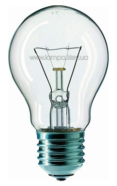
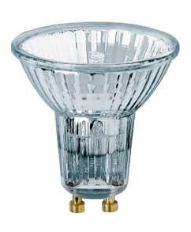
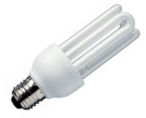
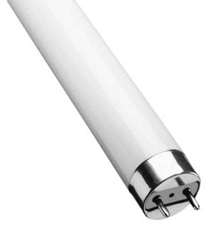

Виды ламп освещения

Нехитрая,
казалось бы, задача – купить лампочку. Но выбор, который предлагают
современные салоны света, способен поставить в тупик даже самого
искушенного потребителя. Большие и маленькие, грушеобразные и трубчатые,
мощные и слабые. Но главный критерий, по которому различаются лампы –
способ «создания» света.
На самом деле, разновидностей ламп не так и много. Самые распространенные - лампы накаливания,
галогенные и люминесцентные. Встречаются также флуоресцентные,
светодиодные, а также токоведущие шины. Лампы всякие нужны, лампы разные
важны, главное – знать, где лучше применить каждый из этих видов.
Лампа накаливания
Та самая «лампочка
Ильича», старая знакомая нескольких поколений – лампа накаливания. В
конце 19 века ее изобретение стало символом 
Свет в лампах накаливания создается путем прохождения электрического
тока через тонкую проволоку, которую обычно делают из
вольфрама. Этот вид ламп популярен благодаря первоначальной
дешевизне и простоте в обращении – поменять перегоревшую лампочку может
даже ребенок. Есть у «светящейся груши» и другие преимущества. Для них
не нужны специальные системы электронного запуска и стабилизации, лампы
накаливания излучают приятный и привычный свет желтоватого оттенка.
Современные лампы накаливания бывают самых разнообразных конструкций и
размеров – от привычной грушеобразной формы до «свечей», которые часто
используются в люстрах.
Но недостатки этого источника света также налицо, и главный из них –
низкая светоотдача. 95% производимой ими энергии преобразуется в тепло и
только 5%- в свет! Кроме того, век такой лампы недолог. В среднем, она
может прослужить не более 1000 часов.
Где лучше применить? Лампы накаливания
применяются повсеместно, они хороши для квартир с традиционной
архитектурой и планировкой – без арочных проемов и навесных потолков.
Лампы накаливания рекомендуют применять возле зеркала в ванной и на
туалетном столике – макияж, нанесенный при таком свете, будет выглядеть
наиболее естественным. Для освещения зеркал и шкафов лучше использовать
трубчатые лампы.
Если требования к цветоразличению в интерьере высоки, лучше
использовать другие источники света. При передаче сине-голубых, желтых и
красных тонов, освещенных лампами накаливания, могут возникнуть
погрешности. Не рекомендуется также использовать лампы накаливания в
больших комнатах. Дело в том, что при их работе выделяется много тепла и
помещение, оснащенное большим количеством таких ламп, просто
перегреется.
Галогенные лампы
Время не стоит на
месте, изобретение Эдисона претерпело значительные изменения и
усовершенствования. Галогенные лампы – новое улучшенное 
Галогенные лампы – компактные, низковольтные, долговечные и
экономные. Спектр их излучения ближе к спектру белого света, чем у
ламп накаливания. Но и они имеют свои недостатки. Такие лампы очень
сильно нагреваются – до 500°С. Потому при их установке нужно соблюдать
правила противопожарной безопасности. Среди минусов галогенных ламп – их
высокая чувствительность к перепадам напряжения в сети. Их нужно
включать через стабилизатор напряжения и не дотрагиваться голыми руками –
колба испачкается и может неожиданно «взорваться» при включении света.
Где лучше применить? Галогенные лампы
применяются везде, как и лампы накаливания. Они компактны, потому
идеальны для комнат с подвесными потолками. Благодаря теплому
белому свету такие лампы отлично передают цвета интерьера и
мебели. Галогенный свет имеет свойство делать окружающие цвета более
интенсивными, придавать особый блеск изделиям из металла, стекла и
хрома, потому его часто используют в витринах магазинов.
Энергосберегающие лампы
Мода на экономию в
Европе началась еще десяток лет назад. Каждая уважающая себя
фирма-производитель светильников выпускает специальные 
Люминесцентные лампы
Их главное
достоинство – низкие затраты электроэнергии. Светоотдача у них превышает
в 5-ть раз, в отличии от стандартных. Первоначально такая лампочка
обойдется дороже обычной, но и прослужит она более долгую службу. 
Люминесцентные лампы работают за счет ультрафиолетового излучения.
Преимущества таких ламп заключаются не только в экономии. Они излучают
мягкий и приятный для глаза свет и не подвержены мерцанию. Но так было
не всегда. До недавнего времени люминесцентные лампы не использовались в
жилых помещениях, так как были только трубчатыми и давали холодный
неуютный свет, в котором все выглядело тусклым и пасмурным. Но
технологии не стоят на месте, и теперь люминесцентные лампы
уменьшились до размеров обычной лампочки и приобрели различные оттенки
спектра.
Где лучше применить? Благодаря тому, что
люминесцентные лампы не нагреваются, их хорошо применять в пластиковых
конструкциях. Светодизайнеры предпочитают именно такие лампы для
создания световых композиций. А в домашних условиях они хороши в тех
комнатах, где подолгу не выключают свет – например, в коридорах и
прихожих.
Другие разновидности
Все прочие виды
ламп пока не приобрели большой популярности, потому расскажем о них
вкратце. Токоведущие шины похожи на рельсы, проложенные по потолку. Свет
обеспечивают миниатюрные светильники,
установленные в специальных пазах. Дизайнеры очень любят такие
конструкции за то, что с их помощью можно превратить комнату в настоящий
театр света. Но в ванной комнате их применять нельзя – из-за
недостаточной защиты от влаги.
Флуоресцентные лампы – это, как правило, стеклянные трубки, наполненные
металлическим порошком, с электродами на каждом конце. Существует около
30 разновидностей таких ламп, самая распространенная – лампа дневного
света. Флуоресцентные лампы имеют холодный спектр света и обычно
используются для декоративного освещения.
Лампы на светодиодах
Светодиод - это
полупроводниковый прибор, генерирующий при прохождении
электрического тока оптическое излучение, которое в видимой области
воспринимается как одноцветное. Главное преимущество таких лам -
миниатюрный размер. А еще они излучают свет определенного цвета – от
желтого и оранжевого до синего. Есть и светодиодные светильники дневного
света, который ближе к холодному спектру. Они часто применяются в
рекламе, а также для наружного и декоративного освещения.